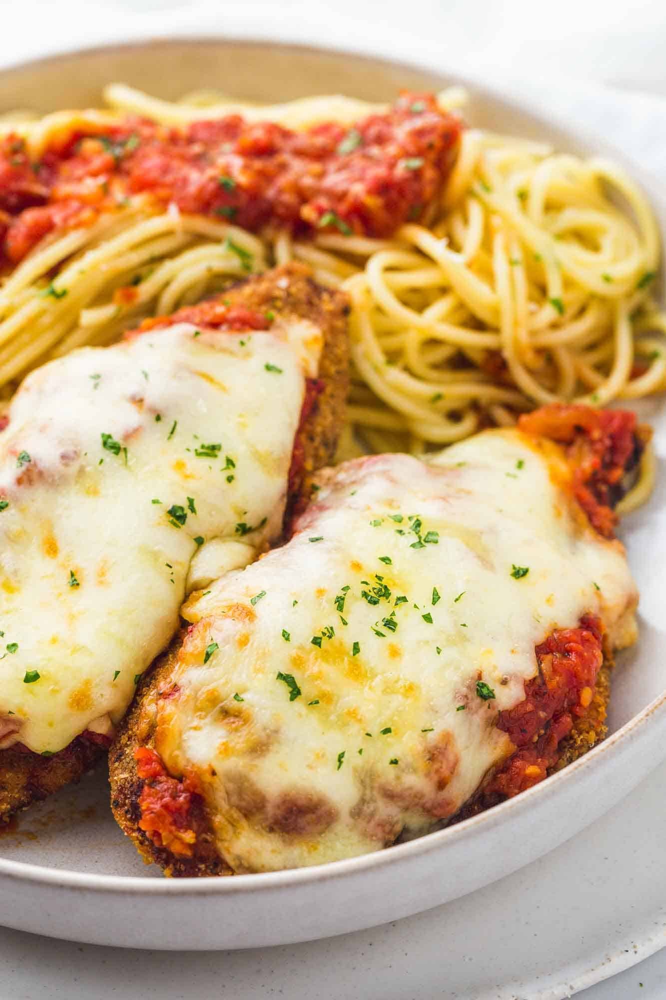
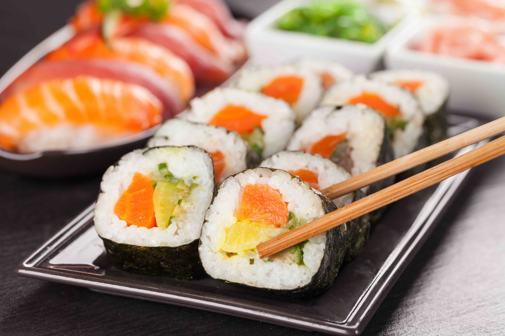

The reason why this is his favorite dish is because I am Italian and generally
Italian food is my favorite and chicken parm was a dish I have always liked
ever since I was little.
| Ingredients | Amount |
| chicken breasts | 4 |
| blanched almond flour | 2 cups |
| large eggs | 2 |
| salted butter | 6 table spoons |
| tomato paste | 7 ounces |
| Water | 2 cups |
| herbes de provence | 1 teaspoon |
| garlic | 6 cloves |
| mozzarella cheese | 16 ounces |
Chicken parmesan is a great meal. First of all it is very simple to make and requires only a few ingredients There is a great mix between cheese sauce the Chicken that ties it all together.
| Ingredients | Amount |
| chicken breasts | 4 |
| blanched almond flour | 2 cups |
| large eggs | 2 |
| salted butter | 6 table spoons |
| tomato paste | 7 ounces |
| Water | 2 cups |
| herbes de provence | 1 teaspoon |
| garlic | 6 cloves |
| mozzarella cheese | 16 ounces |
It is his favorite food because there is a lot of variety to the dish.
| Ingredients | Amount |
| rice | 2 cups |
| seaweed | 1 sheet |
| fish | 1 pound |
| soy sauce | 1/4 cup |
| wasabi | 1 tablespoon |
| ginger | 1 tablespoon |